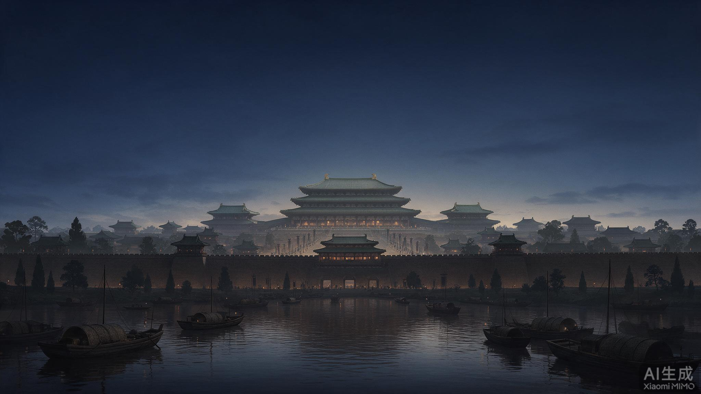
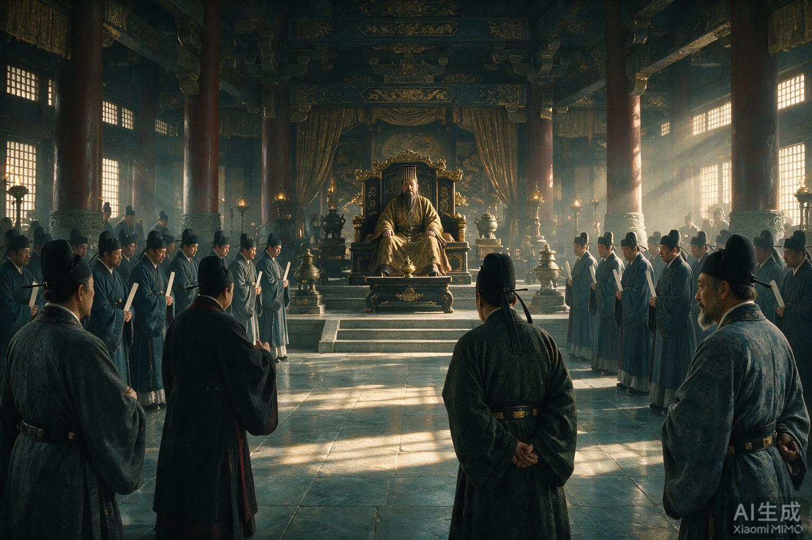
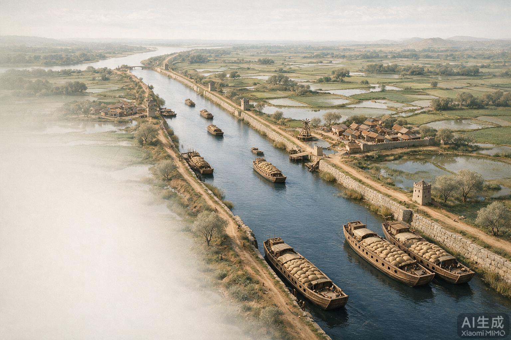
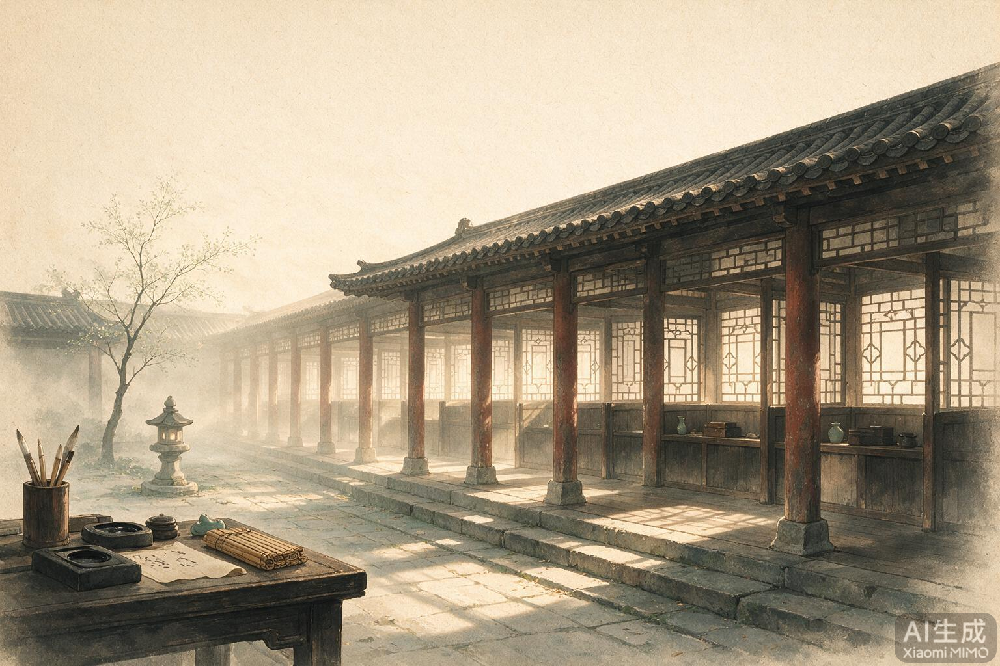
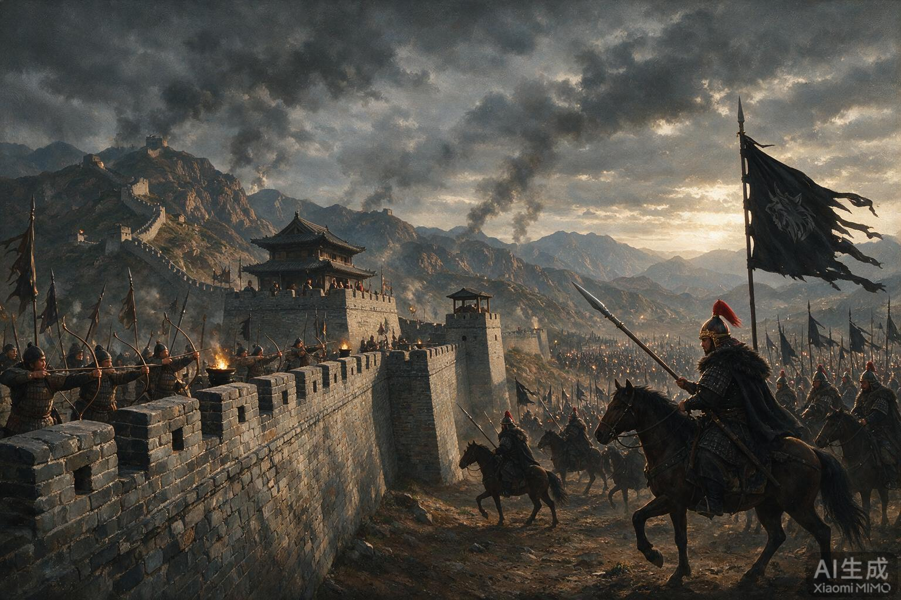

杨坚其人
杨坚出身关陇贵族集团，以外戚身份在北周末年总揽军政。他没有靠大规模血战扫平天下，而是以禅代方式代周建隋，又在南朝陈主昏庸之际完成渡江灭陈。这种「以政略为主、以兵威为辅」的统一路径，使得隋初保留了大量旧朝官僚与制度资源，有利于迅速恢复行政秩序。
第一幕 · 再度统一
北周末年，外戚杨坚执掌朝政。581 年，他夺取北周政权建立隋朝；八年后渡江灭陈，把分裂近三百年的中国重新捏成一块。
建隋。北周末年，外戚杨坚执掌朝政。581 年，杨坚夺取北周政权，建立隋朝，仍以长安为都，是为隋文帝。建立隋朝两年后，迁都大兴城，是为京师。
灭陈。当时南方陈朝的最后一个皇帝陈后主不问政事，沉迷享乐。589 年，隋军渡过长江，灭掉陈朝，统一全国。
意义。隋的统一，结束了长期分裂局面，顺应了民族交融的大趋势，进一步促进了南北方经济、文化的交流和发展。这是继秦、西晋之后，又一次全国性大统一——为后来的大运河、科举、律令推行提供了统一的政令场域。

杨坚出身关陇贵族集团，以外戚身份在北周末年总揽军政。他没有靠大规模血战扫平天下，而是以禅代方式代周建隋，又在南朝陈主昏庸之际完成渡江灭陈。这种「以政略为主、以兵威为辅」的统一路径，使得隋初保留了大量旧朝官僚与制度资源，有利于迅速恢复行政秩序。
北周已为统一奠基：府兵制强化了军事动员，关陇集团整合了胡汉贵族，灭北齐后北方已基本一体。陈朝则偏安江左、君臣怠政。杨坚接手的是一个「北方已强、南方已弱」的格局，统一成本低于秦汉，但统一后的治理成本极高——如何消化南北差异，才是开皇年间真正的考题。
第二幕 · 制度奠基
教材写得很克制：发展经济、编订户籍、减轻赋役、统一度量衡、加强集权、修订刑律。背后是一整套把人口、税负、法典和行政流程「标准化」的国家工程。

隋文帝朝堂：减省刑律、简并机构、核实户口，开皇年间国力迅速恢复
隋朝建立后，发展经济，编订户籍，核实户口，减轻百姓赋役负担，统一币制和度量衡；加强中央集权，修订和减省刑律，简化机构，提高行政效率。隋朝经济迅速恢复和发展，人口数量和垦田面积大幅度增长，成为国力强盛的王朝。后世史家常以年号称之为「开皇之治」——教材未用此四字，但用「国力强盛的王朝」表达了同一判断。
教材写「编订户籍，核实户口，减轻百姓赋役负担」。编户不是登记身份证那么简单，而是把每一个丁口绑定到均田与课役上：户口清了，税基才稳；税基稳了，才有条件减负。这一组动作是开皇国力的底层操作系统。
「大索」是全面清查户口，「貌阅」是当面核对年龄体貌，防止「诈老诈小」逃避赋役。豪强荫庇的人口被重新纳入编户，国家税基显著扩大。它回答的是教材那句「核实户口」里最关键的三个字——怎么核。
朝廷颁布统一的「输籍」样册，规定各等户的赋役标准并张榜公布。地方官不能随意抬高等级，豪强也难以上下其手。它与大索貌阅配套：一个扩户口，一个定税则。没有定样，中央「减轻赋役」的善意到不了民户。
开皇元年（581）颁《开皇律》，三年修订：条文大幅删减，定型十二篇；刑罚统一为笞、杖、徒、流、死五刑，废除枭首、轘裂等酷刑，死刑须复奏；「十恶」入名例，谋反等不得赦免。《开皇律》是后世《唐律疏议》的直接蓝本——教材「修订和减省刑律」六个字，展开就是一部中国法制史的枢纽。
中书（内史）省决策、门下省审议、尚书省执行，下设吏、户、礼、兵、刑、工六部。分工明确，削弱权臣专权空间，提高行政效率——正对应教材「加强中央集权……简化机构，提高行政效率」。唐承隋制，这一架构沿用近三百年。
统一币制和度量衡，降低交易与财政成本，便利南北经济交流。与全国统一叠加后，跨区域市场才有可能真正运转——这也是后来大运河能发挥「全国物流」功能的前提条件之一。
第三幕 · 国家工程
605 年起，隋炀帝征发几百万人，陆续开凿贯通南北的大运河。它是当时世界上最长的运河，也是后世评价炀帝功过时最纠结的一笔。
为了加强南北交通，巩固隋朝对全国的统治，隋炀帝征发几百万人，从 605 年起，陆续开凿了一条贯通南北的大运河。
走向与规模。大运河以洛阳为中心，北抵涿郡，南至余杭，连接了海河、黄河、淮河、长江和钱塘江五大水系，全长 2700 多千米，是当时世界上最长的运河。
作用。大运河的开凿和贯通，带动了沿河城市的繁荣与发展，加强了南北地区政治、经济和文化的交流，有利于国家统一和民族交融。
想一想。我国地势西高东低，主要河流多自西向东流。为什么大运河是南北走向？——因为大一统帝国需要把政治中心（洛阳/关中）与江南粮仓、幽燕防务用水路缝合起来，东西向的天然水道做不到这件事。

一般记作：永济渠（涿郡—洛阳方向）、通济渠（洛阳—淮水）、邗沟（淮水—江都）、江南河（江都—余杭）。教材「读地图」要求指出四段，并找出端点与所连水系。可结合课本地图在黑板上沿「洛阳—涿郡」「洛阳—余杭」两条轴线标注。
「漕」指国家组织的水路粮运。江南粮经运河汇集洛阳，再转输关中，称为转漕。运河不只是观光水道，而是帝国粮食供应链的大动脉——理解了这一点，才能理解教材为何把它写进「巩固统治」而不是「奇观工程」。
含嘉仓是隋唐时期最大的国家粮仓，被誉为「天下第一粮仓」。始建于隋，位于东都洛阳含嘉城内。经考古发掘，遗址面积 40 多万平方米，有数百个粮窖；重点发掘的 160 号粮窖保存约 50 万斤炭化谷粒。大运河开凿后，大量粮食经水路从江南运到洛阳；关中灾荒缺粮时，朝廷可及时调拨，稳定市场。
课堂提示：评价大运河要分两层——①工程本身的长期收益（南北经济文化通道，后世长期依赖）；②实施过程中的民力透支（征发数百万人，与营东都、修长城驰道叠加）。学生若把「功在千秋」与「当时苦民」对立起来，说明还没抓住「短期成本 / 长期收益」的历史分析框架。
第四幕 · 选官革命
隋文帝废除前朝选官旧制、依才能取士；隋炀帝设进士科，标志着通过考试选拔人才的科举制创立。这是一场改变中国一千三百年社会流动方式的制度革命。

背景。魏晋南北朝时期，官员的选拔权由上层权贵掌控，选官看重门第，不太注重才识。世家大族子弟垄断了官场中的中高级职位，平民子弟很难晋升。
转折。隋文帝即位后，废除了前朝的选官制度，依才能取士。隋炀帝时，设置进士科，标志着通过考试选拔人才的科举制创立。
意义（教材）。科举制度是我国古代选官制度的重大变革。它的延续和完善，加强了朝廷在选官上的权力，使通过考试选拔官员的用人制度逐渐确立。它不仅扩大了统治基础，对社会阶层流动也起到积极作用，还显著提高了整个官僚队伍的文化素养。此后，科举制成为历朝选拔官员的主要制度，一直延续了约 1300 年。
九品中正制由曹魏确立：中正品评人物为九品，授官以家世、状品为要。运行日久，「上品无寒门，下品无势族」，中央难以真正按才授官。隋统一后需要更直接的国家选才通道，故废前朝选官旧制。这是教材「选官看重门第 → 依才能取士」背后的制度史前史。
隋：文帝分科考试取士 → 炀帝置进士科。唐：科目增多（进士、明经等），程序逐渐严密，成为士人入仕主渠道。宋以后糊名、誊录等使考试更严密。初中阶段只需掌握「隋创立、约 1300 年」；拓展用于建立「察举 → 九品中正 → 科举」的选拔史时间感。
可从三方面组织答案：①权力——选官权收归朝廷，削弱门阀对中高级职位的垄断；②结构——扩大统治基础，促进社会阶层流动，使有才学的平民有机会入仕；③素质——提高整个官僚队伍的文化素养。此后科举成为历朝主要选官制度，影响长达约 1300 年。
科举不是孤立的人事政策。它与三省六部、开皇律、统一度量衡一样，都是把「人」和「标准」从地方豪强与贵族集团手里收回国家的过程。统一的帝国需要统一的选才标准——这也是为什么科举创立于隋、大盛于唐。
第五幕 · 透支
教材用一句话定调：隋炀帝急功近利，不惜民力。接下来是一串令人窒息的动词——营、开、修、巡、征。
隋炀帝急功近利，不惜民力，每年都要征发大批劳动力，驱使他们营建东都洛阳、开凿大运河、修筑长城和驰道。他多次巡游，乘坐高大华丽的龙舟，随行船只浩浩荡荡，仅拉纤民工就多达数十万，耗费大量人力和财力。
洛阳居天下之中，便于控山东、江南并对接运河，战略上并不荒谬。但营建本身就是巨大民力支出。教材把它写进「不惜民力」的清单，提示学生：评价一项工程，既要看目的是否合理，也要看动员方式是否透支社会。
大业元年（605）、六年（610）、十二年（616）三次大规模南巡（史家统计口径略有差异，教材统称「多次巡游」）。船队绵延二百余里，挽船民夫、骑兵夹岸而行，沿途州县供顿极繁。最后一次南巡后即滞留江都，618 年在那里被杀——南巡终点成了王朝终点。
长城重在北防，驰道改善陆路，龙舟巡游则把运河运力用于夸耀。三者与营东都、开运河同属「全国交通—防务—仪仗工程包」。问题不在单点，而在叠加：同一时期多项超大规模动员同时进行，编户丁壮被反复抽离田亩。
可让学生做一个思想实验：如果只有开运河、没有龙舟与三征辽东，隋会怎样？皮日休的诗已经给出唐人答案——运河可以留下，龙舟才是罪。但历史没有单选题：同一套动员能力，在不同决策下可以是治国工具，也可以是自毁工具。
第六幕 · 边疆与战争
对外关系有两条线：一条是经略与认识（流求），一条是战争与围困（高句丽、突厥）。前者写入「相关史事」，后者直接压垮了编户社会。
隋朝称今天的台湾为流求。隋炀帝即位不久，先后三次派人前往流求，其中第三次是在 610 年。隋炀帝派武将文臣率领一万多人，从义安出发，渡海抵达流求，加强了与流求的联系。隋朝对台湾地区的认识比以往前进了一大步。《隋书》中有对流求的专门记载，详细记述了这一地区地理、物产、社会组织、饮食、服饰、习俗等各方面的情况。
教学提示：与「征辽东」区分——对流求是加强联系与认识，征辽是战争。
隋炀帝还三次征辽东，役使大量农民，百姓无法正常从事生产劳动，民不聊生，社会矛盾激化。
教材称「三次征辽东」，对手主要是辽东、朝鲜半岛北部的高句丽（「三征朝鲜」是通俗说法）。612 年第一次：倾全国兵力号称二百万，宇文述等率陆军深入，于萨水（清川江）大败。613 年第二次：因杨玄感起兵后方被迫撤军。614 年第三次：国内已乱，高句丽也疲敝请降，炀帝班师——得一纸降表，国力已近耗竭。
杨玄感，开国重臣杨素之子。二征高句丽时他在黎阳督运粮草，趁后方空虚起兵，达官子弟多有响应。兵败被杀后，炀帝穷究党与，大开杀戒。意义在于：此前起义多是编户民变，杨玄感是统治集团内部公开反叛——对应教材「一些隋朝官员也趁机起事」，是隋亡从民变升级为全面崩溃的关键节点。
大业十一年（615）八月，隋炀帝北巡塞外，东突厥始毕可汗率数十万骑将其围困于雁门（今山西代县一带）。城中粮食仅支二十日；后以诏书募兵、许嫁公主于突厥，始得撤围。此后炀帝惧北疆，再未有效控驭边军，加速了地方势力离心。教材未写此役，但它是「对外两线透支」的绝佳注脚。
隋唐前期行府兵制：兵农合一，府兵番上宿卫或出征。大规模征辽东需动员编户丁男，与均田编户、赋役制度绑定——这解释了教材「役使大量农民，百姓无法正常从事生产劳动」为何会直接击穿农业与社会秩序。

雁门之围：东线未了，北线又危——帝国的边疆防御被透支到极限
第七幕 · 崩塌
起义首先爆发在深受徭役、兵役之苦的今山东地区，随即迅速扩展到全国。在起义军和反隋势力的打击下，隋朝的统治濒临崩溃。
民不聊生。最终导致大规模农民起义。起义首先爆发在深受徭役、兵役之苦的今山东地区，随即迅速扩展到全国。各地形成了许多反隋队伍，一些隋朝官员也趁机起事。在起义军和反隋势力的打击下，隋朝的统治濒临崩溃。
末世惨状（相关史事）。隋朝末年，许多老百姓为逃避徭役和兵役，被迫采用断手断足的方式，时称「福手福足」。因严重饥荒又得不到赈济，有的地区百姓连草根树皮也找不到，只好「煮土而食」。起义军在发布的檄文中，痛斥隋炀帝：「罄南山之竹，书罪无穷；决东海之波，流恶难尽。」
材料研读。「父母不保其赤子，夫妻相弃于匡床，万户则城郭空虚，千里则烟火断灭。」——《旧唐书·李密传》。为什么隋朝末年会出现这样的状况？作答方向：连年大工程与征辽 → 丁壮远役、田地荒芜 → 饥馑与家庭解体 → 千里萧条。
结局。618 年，隋炀帝在江都被部下杀死，盛极一时的隋朝随之灭亡。
①滥用民力：营东都、开运河、修长城驰道、多次巡游、三次征辽东，长期大规模征发；②生产破坏：百姓无法正常从事生产劳动，民不聊生，社会矛盾激化；③全面反抗：农民起义（山东首发、扩展全国）与官员起事叠加；④结构因素（拓展）：二世而亡、结束分裂后大工程透支，与秦有相似处——为汉、唐铺路，自身却倒在转折点上。
秦、隋常被并称：皆结束长期分裂、皆有大型国家工程、皆短期制度创新（郡县/科举与运河）、皆二世而亡，并为后续强盛王朝（汉、唐）铺路。对照有助于把「统一—建设—透支—崩溃」抽象成可迁移的历史结构，但答题时仍须先立足教材材料。
收束 · 课堂
用三分钟回顾时间线，再用板书讨论题收口。建议投影本节，边讲边点章节。
板书建议：黑板左侧画时间轴（581–618），右侧画「统一 → 制度 → 工程 → 透支 → 崩塌」因果链；「教材」用白笔，「拓展」用彩笔。
若需要按「时间纵向 × 举措横向」对照查阅（可筛选教材/拓展、点开因果链），请打开同目录下的 sui-lesson1-matrix.html。本页适合课堂讲授，矩阵版适合备课检索与学生自学。
隋用制度与工程把分裂的中国重新缝合，并留下运河、科举、律令这些「唐所继承」的遗产；又因把同一套动员能力用到透支，三十八年而亡。繁荣与开放的时代，是从这份遗产与教训里长出来的。